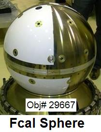
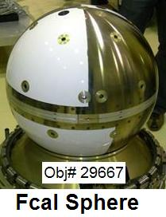
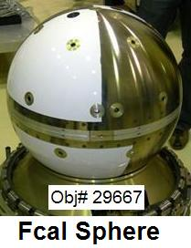
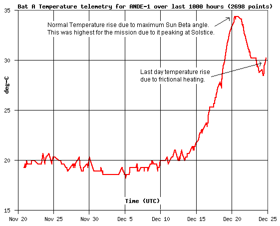
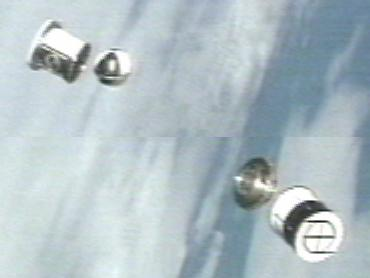
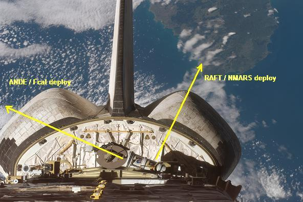

ANDE - MAA Operations
 

US Naval Academy Satellite Lab
Bob Bruninga, WB4APR
ANDE - MAA Operations

US Naval Academy Satellite Lab
Bob Bruninga, WB4APR
ANDE RE-ENTRY 25 Dec 2007: Re-entry was at 0724z +/- 15 minutes with last radar observation by SPASUR at 0443z. . The last packets were heard on the 24th at 2054z. . The final telemetry over the last 24 hours did show about 2 degrees of re-entry heating over nominal temperature. . The nominal temperature at the time were high since the peak solar beta angle happened to coincide four days earlier with the winter solstice, giving the maximum solar exposure as shown below:

ANDE was a nearly perfect 19" sphere with a mass of 50 kg. . USNA Students had a contest to predict the exact re-entry date and time. . Here are their predictions. . The last two were the two profs for the course who bracketed the actual date. .
Operations Contest: . PA3GUO and DK3WN are sponsoring an ANDE Operations Event and contest to encourage operations and reception of telemetry. . So activate your ground station so that we can collect as much final telemetry as possible. . We do anticipate that the primary batteries for ANDE will last through end of mission as designed. . See Battery Analysis, and 13 Dec update, and Temperature... . The plot below is the updated expected decay altitude. . The dotted blue curve is the original curve computed at launch a year ago. . The black updates are from KG4QWC and the red dot is what Instantrack shows me?.
13 Dec update, and 27 Nov prediction.
Satellite Simulated Emergency Test: . Beginning the second week in November, ANDE is part of a Satellite Simulated Emergency Test to demonstrate first-responder emergency communications out of an affected area. See details. . This is in support of AMSAT initiatives toward a Homeland Security potential mission involving the Amateur Satellites. . This period is especially rewarding since it corresponds with the annual fall full-Sun-recovery of PCSAT making dual hop and joint operations possible, including joint operations with the ISS .
Important ANDE links: .
ANDE Special Event 28 and 30 August: . As USNA Students return for the fall semester, we will do some special operations on Tuesday and Thursday mornings when the students are in lab. The first day we will set high-rate telemetry and collect data including packets from users. On Thursday, we may activate the voice transponder.
ANDE Field-Day Operations: ANDE and PCSAT (W3ADO-1) were available for Field Day operations, both operate as standard APRS digipeaters on 145.825 MHz up and down, 1200 baud. . W3ADO-1 may work for a few lucky contacts since it is semi-operational. . But ANDE should be fully operational, though it needs a small beam probably. . The PATH for ANDE is via ARISS just like for the ISS. . For PCSAT the path is VIA W3ADO-1.
ANDE Speaks. 10 Feb 07: . Although ANDE has the same voice circuits as RAFT, they can only be activated on each orbit by command station, and then, only after ANDE is awakened by user activity on the channel. . Once activated, it speaks anyone's message to TALK. Good luck! . Hear the PE1ITR and DK3WN contact. and others in a voice contest.
Packet-to-Voice Synthesizer Rules: . Notice. The normal ANDE downlink transmitter power is reduced by 6 dB during voice to save primary battery power. Unless you are close and have a good beam, you will not hear the voice synthesizer. It is much weaker than the ANDE packets. Here is how to operate the ANDE voice:
Hear a sample of the stronger RAFT over Europe from DK3WN.
PCSAT-1: was restored to full operations in constellation with ANDE and RAFT on 1 Jan07 but experienced a reset on 18 Jan due to re-entering eclipse season. PCSAT-1 will not be available again until this fall.
ANDE is a US Naval Academy Satellite Communications Student Project. This mission is short due to ANDE's low altitude. See a TV News Video as the students describe their work.
THE 145.825 EDUCATIONAL SATELLITE NETWORK: All APRS packet relay satellites are encouraged to join us on this common satellite frequency (after coordination with the IARU) to help maintain this common space borne relay frequency for the convenience of students and users around the world. ANDE joins PCSAT-1 as a 3 satllite constellation of relay satellites on this frequency. On 10 January, Pehunesat of Argentina joined the constellation with both voice and packet. UO-11 is still often heard as well. See our Ocean Buoy student project as an example application on this channel. See the LIVE packets on this channel, collected by automated ground stations around the world.
FCAL DEPLOYED, ANDE-MAA STUCK IN CAN: On 21 December at 1823z just east of
New Zealand, the CAPE-ICU deployed
(see map)
and 40 seconds later the ICU was supposed to separate into
5 pieces (3 parts and 2 satellites). In the photo below you can see that
FCAL floated out of its half as planned, but ANDE-MAA
appears to be stuck in its half of the can (the lower right). The separation ring
is in the middle just a foot or so from the ANDE cannister.

See Movie.
See the Design.
See initial Spin Analysis
5 month Spin Report (.doc)
UPDATE: . ANDE Lives! on the 21 Dec, 2200z pass, ANDE awoke and sent out one packet with temperatures showing a balmy 25 to 28 deg C. ANDE-MAA had apparently drifted out of the can about 31 minutes after deploy and is fully operational (See report).. By 9 Jan, it appears that ANDE has no spin (see plot), and (temps).
Subsequent passes improved and we gained command of ANDE. Signals are weaker than PCSAT-1 and by mid-day and most systems checked out, we authorized user access on a limited basis. ANDE cooled to -10C on the outside the first full day. But later stabalized to an internal temperarure of about 15 deg C with peaks on the shell of 40 C at the end of a sun-side pass. See the report-2.
LIMITED USE AUTHORIZED: . Users may use these spcecraft in accordance with the current User Service Agreement. Supported modes are:
RAFT Speaks!: Hear samples from PA3GUO, JE9PEL of JF1AJE, PE1ITR. . Users are cautioned that unattended uplinks are not generally authorized and uses must not overlaod the uplink so that command stations cannot get in.
DO NOT TRANSMIT a voice packet to ANDE if you cannot hear packets from the spacecraft! The downlink is very weak and we cannot afford anyone transmitting in the blind and blocking command access. With an OSCAR array, even command stations cannot hear RAFT below 10 degrees. Omni stations may only hear it 2% of total pass times during the center minute or so of a rare overhead pass. Transmitting speech packet is ONLY authorized in accordance with the current User Service Agreement.
The photo below shows the launchers on orbit ready to spring into action...:

Photo inside the Payload Bay,
On orbit,
Detail view.
Photo of ANDE and FCAL inside the CAPE and ICU
Photo of RAFT and MARScom
Photo of the RAFT launcher
ANDE/PCSAT-1 CONJUNCTIONS: During the next full-sun period of PCSAT-1 this fall, we hope to do some joint operations tests between ANDE and PCSAT-1. When they are in view of each other, exciting dual hop packet relays are possible as shown in the following graphic:

ANDE Science Missions: The NRL science mission of ANDE is to measure the density of the upper atmosphere by precise tracking of the orbit decay by the Maui Laser Ranging Tracking Station. The Comm system provides important telemetry on the attitude and temperature of the spacecraft.
ANDE Communications: ANDE carries packet radio communications
systems operating in the Amateur Satellite Service and joins with other USNA APRS digipeating
satellites such as PCSAT-1. ANDE will respond to the path alias of
APRSAT and ARISS and other common APRS aliases. This is so that users do not have
to reconfigure their path between satellites or between their ISS groundstation. The
following frequencies are used by these two spacecraft:
ANDE Operations: When ANDE is awake, it has four operating capabilities, telemetry, Digipeating, a Packet-to-Voice Synthesizer and Lasers. It sleeps 90% of the time and only wakes up for 2 seconds out of every 16 seconds to see if it hears any packets. If none, then it goes back to sleep to save power. (it has no solar power system, only primary batteries). Once it awakens, it is useable as a digipeater until 1 minute after the last packet heard. The batteries should last a year.
ANDE Lasers: The lasers are in the near infrared and outside of normal vision, though we could see some "red" though only about like a standard red LED in brightness.. (Thought the lasers are 1 Watt and blinding in the infrared!). They are probably not visible to the eye, but should show up in a CCD camera. The Lasers require a SYSOP to activate and since their main function is to be tracked by the Maui Laser Ranging station, the lasers will probably only be turned on by our volunteer Hawaii command stations. The lasers are nearly omni directional, so the 1 Watt power is dispersed over a large area and weak in any one direction. Visibly, not any brighter than a single standard LED. I doubt any amateur astronomer would be able to see it unless they have a CCD camera. See laser info for details.
ANDE Packet-to-Voice Synthesizer: This experiment is carried on both RAFT and ANDE, but on ANDE, this circuit can only be activated by a SYSOP command station and only on a single-pass-at-a-time basis since it goes back to sleep and resets everything after the pass is over. This circuit on ANDE may only get used if the RAFT one is inoperative.
ANDE APRS Digipeater: This simple AX.25 digital repeater is just like the ones flown on PCSAT-1, PCSAT2 and RAFT and also as ARISS on the ISS. It defaults to ON whenever ANDE wakes up. It responds to the common digipeater aliases of "APRSAT" and "ARISS" so that users do not have to frequently change their transmitter settings.
ANDE Voice Synthesizer: ANDE has the text-to-speech synthesizer so that it can speak packets sent to it. Hear DK3WN's example. The format for such a packet is standard APRS message format. Simply address your message to the speech synthesizer callsign of TALK. If the voice syhtnesizer is activated, it will speak the packet. It ignores the AX.25 packet header and also the APRS overlaying protocol and converts all of that overhead to simply "XXXXX says:" and then continues with the original packet text converted to voice.
To save power, ANDE sleeps if nothing heard in over a minute. It only wakes to test channel activity for 1 second out of every 16. Once ANDE hears channel activity on 145.825, then it can be commanded by the SYSOP to turn on the voice synthesizer. At this point, any APRS formatted messages to "TALK" will be spoken.

VOLUNTEER GROUND STATIONS: Since ANDE has no onboard computer for whole-orbit telemetry capture we are dependent on volunteer ham radio ground stations (see typical photo - AA6RR) and (EA8BQD in the Canaries) for telemetry feeds to the APRS Internet system for live distribution. Any APRS station can be a satgate just like they are normally for operation of an IGate. There is no difference.
SETTING UP A SATGATE: You can use any APRS program to feed satellite data to the APRS-Internet system (APRS-IS) in the normal manner like any IGate. But if you dont want to mess with all the APRS system, you can build a simple SatGate using only the ALOGGER program. See building an ALOGGER Satgate. See the status of other SATgates. Click to ( download) Alogger. . You can also set up a satgate using any APRS client software. See JE9PEL's page on how to set up UIview as a satgate.
SIMPLE SATGATE ANYONE CAN DO: Although it appears to take an OSCAR array to bring in ANDE and RAFT packets, we do not expect most satgates to have one. We take advantage of the global distribution of the APRS SATgate system to combine the outputs of dozens of stations so all we need is each station to hear one or two packets, and then we can all see all of them on the APRS internet system. The best antenna for this is on the gound in your backyard. Just make a 57" vertical over a large chicken wire ground plane. This becomes a 3/4 wave (50 ohm) vertical with almost 7 dB of gain above 30 degrees.
No, you won't hear most packets, but you WILL hear a few, a few times a day, and that is what we need. The figure below shows the gain pattern of such an antenna. Combined with the fact that the satellite is 10 dB closer to you when overhead than on the horizon, gives you a total of 17 dB gain advantage to those few packets. Those few packets combined with those few from everyone else should give us good continuous data. Since it is on the ground, it is not that bad of a winter project! No moving parts, no tuning for doppler, and antomatic IGate, and you are done. The GREEN plot is the 3/4 wave compared to the RED which is a 1/4 wave. Make the ground plane screen as big as you can. Maybe 6 feet or more?

ANDE: See a complete description of ANDE. This is just one of many Naval Academy compatible spacecraft and several other compatible satellite projects operating in the Amateur Satellite Service. The following map shows the stations that have volunteered to support the special telemetry downlinks from PCSAT2:

User Service Agreement: ANDE cannot live up to its full potential unless all users use it as designed. Therefore like other Naval Academy Satellites, we ask that all users subscribe to the RAFT User Service Agreement. If you agree to use RAFT in accordance with the guidelines posted there, then you may use the spacecraft.
The following screen capture shows what ANDE telemetry looks like. Notice that there are two columns for the A and B side (ANDE-1 and ANDE-2). Side B reports on the bottom half of ANDE and side A reports the top half. The head of the column shows which packet (00,01,10,11) contains that telemetry. In this capture, ANDE was in the dark because you can see that the graphics to the lower right does not show any solar sensors illuminated. The other graphics shows temperatures, in this case, as a cool blue. Otherwise most of these values are gyberish and not real. The currents in the upper right are HIGH and are shown in RED. NOrmally we expect to see values in the tens of mA. You will see 400 mA if a TX is captured. See more info on ANDE telemetry

EXAMPLE NETWORK DIAGRAM:

Ground Stations can be simple or complex. A simple 19" whip over a ground plane works very well and can see the satellite above about 15 degrees. A full tracking station down to the horizon may get more data, but may not be worth the expense. However, it should be noted that RAFT does not have cross polarized antennas, so there will be nulls in the pattern. But there is a tiny magnet on board that should orient those antnnas along the Earths Magnetic field. The plot below suggests the orientation that a mid-latitude station will see if looking west (or east). The satellite will be mostly horizontal to the south, and tend towards vertical to the North. Since RAFT is deployed from the Shuttle (coming back from the ISS), it will be in an orbit similar to the ISS (just lower and faster)...

FIXED OR AUTOMATED STATIONS AND ANTENNAS: If there are enough ground stations, then trackign stations are not required, since when one station loses it on the low horizon, it should be over another ground station somewhere else. See the plot below comparing the gain of a 1/4 wave whip with a 3/4 wave whip. This is live data obtained from a 1/4 wave and 3/4 wave whip (scaled to GPS size and using the GPS constellation over 12 hours to provide all-sky signals):
Much experimentation in this area is needed. Here is a plot of the theoretical EZ-NEC produced gains of three whip antennas including the path loss due to range. THis shows the 3/4 wave antenna to not begin working until above 30 deg, but I routinely capture some data above 20.... Better than shown here.

Bottom line, whats the best antenna? Depends on how many people are collecting data from which directinos.... There are enough of you and enough different stations for us to find out!
DESIGN DETAILS relative to OPERATIONS:
You are visitor:
<== not visible on IE, but NetScape sees it
(was 19,500 at 1600z on 20 Dec 2006)
.
|
|
|
|
{kind=link}
{kind=link}
{kind=link}
{kind=link}
{kind=link}
{kind=link}
{kind=link}
{kind=link}
{kind=link}
{kind=link}
{kind=link}
{kind=link}
{kind=link}
{kind=link}
{kind=link}
{kind=link}
{kind=link}
{kind=link}
{kind=link}
{kind=link}